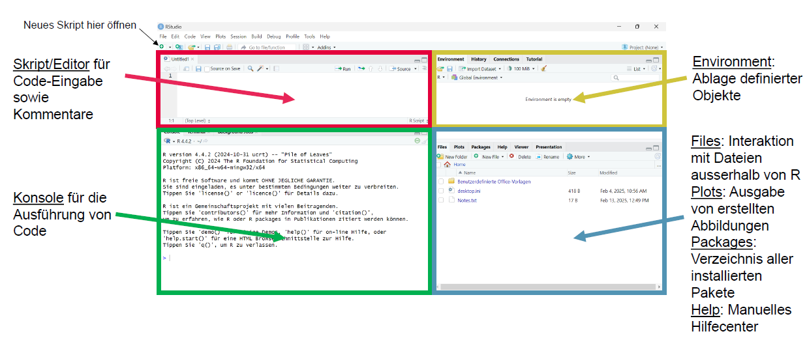

install.packages("tidyverse")Lösung 1
1 Lösung - Codings Basics (Einheiten 1 und 2)
Bei Bedarf finden sich hier nochmal die Slides zur EH1:
1.1 Installation R und R-Studio
Installiere R und RStudio:
Installation von R – neueste Version 4.5.1: https://stat.ethz.ch/CRAN/
Installation von Rstudio (Version 2025.05.1): https://posit.co/download/rstudio-desktop/
Du weisst nicht was mit R auf sich hat? Hier ist eine Kurzerklärung: https://methodenlehre.github.io/einfuehrung-in-R/
1.2 Einstellungen
- RStudio öffnen & Einstellungen vornehmen: Unter «tools» –«global options» die unter 1.1. beschriebenen Einstellungen vornehmen: https://methodenlehre.github.io/einfuehrung-in-R/chapters/01-workflow.html
- Neues Skript öffnen & orientieren:
1.3 Hands on: Coding Basics
Im folgenden machen wir uns vertraut mit der Oberfläche von R-Studio:

- Skript für Code-Eingabe sowie Kommentare
- Konsole für die Ausführung von Code -> Teste einfache mathematische Operation in dieser; reproduziere diese mittels Skript
- Rechts oben: Environment & History
- Rechts unten: Files, Plots, Packages und Help Viewer
1.4 Pakete installieren und laden
Tidyverse ist ein Meta-Paket, das mehrere Pakete umfasst
Pakete installieren (nur 1x notwendig) -> führe diesen Code in der Konsole aus
Paket laden (innerhalb des Skriptes, bei jedem Neustart von R notwendig)
library(tidyverse)Warning: Paket 'tidyverse' wurde unter R Version 4.4.3 erstelltWarning: Paket 'tibble' wurde unter R Version 4.4.3 erstellt── Attaching core tidyverse packages ──────────────────────── tidyverse 2.0.0 ── ✔ dplyr 1.1.4 ✔ readr 2.1.5 ✔ forcats 1.0.0 ✔ stringr 1.5.1 ✔ ggplot2 3.5.1 ✔ tibble 3.3.0 ✔ lubridate 1.9.4 ✔ tidyr 1.3.1 ✔ purrr 1.0.4 ── Conflicts ────────────────────────────────────────── tidyverse_conflicts() ── ✖ dplyr::filter() masks stats::filter() ✖ dplyr::lag() masks stats::lag() ℹ Use the conflicted package (<http://conflicted.r-lib.org/>) to force all conflicts to become errors
Tipp: Pakete regelmässig updaten mit z.B. update.packages()
1.4.1 Operatoren kennenlernen
a. Nutze R als Taschenrechner
123+456
Lösung
123 + 456[1] 5792. `144*112`
Lösung
144*112[1] 161283. `10/3`
Lösung
10/3[1] 3.3333334. Quadriere 420
Lösung
420^2[1] 1764005. Ziehe die Quadratwurzel aus 146 mit der Funktion `sqrt()`
Lösung
sqrt(146)[1] 12.083056. Berechne den Rest der Division 10/3 mit dem Modulo Operator: `%%`
Lösung
10 %% 3[1] 11.4.1.1 Arithmetische Operatoren und Funktionen in R, z.B.
| Zeichen | Bedeutung |
|---|---|
| + | Addition |
| - | Substraktion |
| * | Multiplikation |
| / | Division |
| sqrt(x) | Quadratwurzel |
| abs(x) | Betrag (absoluter Wert) |
| x %% y | Modulo (x mod y) 5 %% 2 = 1 |
| ^ | Potenz |
1.4.2 Erste Zuweisungen/Variablen definieren
- Weise den Wert 5 der Variable
xzu mit dem Operator<-
Lösung
x <- 5- Weise eine beliebige Zahl der Variable
yhinzu und dividiere dannxdurchy. Speichere dieses Ergebnis in der Variablez.
Lösung
y <- 10 # hier könntet ihr auch jede andere Ziffer wählen
z <- x / y- Schaue dir das Ergebnis in deinem Environment an. Lass dir das Ergebnis auch in der Konsole ausgeben. Das Environment findest du oben rechts, die Konsole ist unter deinem Skript.
Lösung
# z (hier über das # auskommentiert, da der Befehl nicht im Skript, sondern unten in der Konsole ausgeführt werden soll)- Erstelle zwei Variablen: Eine mit deinem Vornamen und eine mit deinem Nachnamen. Solche “character” Variablen musst du in Anführungszeichen setzen
""
Lösung
vorname <- "Lars"
nachname <- "Schilling"- Kombiniere deinen Vor- und Nachnamen zu deinem vollen Namen mittels
paste. Speichere diese Variable alsvoller_name.
Lösung
voller_name <- paste(vorname, nachname)1.4.3 Vektoren definieren
- Definiere einen Vektor «first_vector» mit den Zahlen 100, 80, 54, 73. Einen Vektor definiert man so:
first_vector <- c(...)
Lösung
first_vector <- c(100, 80, 54, 73)- Wende den Befehl
boxplot()auf deinen Vektor an
Lösung
boxplot(first_vector)- Berechne die Summe
sum()und den Mittelwertmean()von deinem Vektor
Lösung
sum(first_vector)[1] 307mean(first_vector)[1] 76.75- Multipliziere deinen Vektor mit
*2
Lösung
first_vector * 2[1] 200 160 108 146Die wichtigsten Operatoren und Funktionen in R: https://methodenlehre.github.io/einfuehrung-in-R/chapters/02-R-language.html
1.4.3.1 Statistische Funktionen, die man auf Vektoren anwenden kann, z.B.
| Funktion | Bedeutung |
|---|---|
| mean(x, na.rm =FALSE) | Mittelwert |
| sd(x) | Standardabweichung |
| var(x) | Varianz |
| median(x) | Median |
| sum(x) | Summe |
| min(x) | Minimalwert |
| max(x) | Maximalwert |
| range(x) | Minimal - und Maximalwert |
1.4.4 Logische Operatoren
- Teste ob die Zahl 5 größer als 2 ist –> TRUE or FALSE?
Lösung
5 > 2[1] TRUETRUE, 5 ist grösser als 2.
- Teste ob 6 ungleich 8 ist –> TRUE or FALSE?
Lösung
6!=8[1] TRUETRUE, 6 und 8 sind ungleich.
- Subtrahiere 80 von 50 und speichere das Ergebnis in einer Variable namens «diff_score».
Lösung
diff_score <- 80 - 50- Berechne mit
abs()den absoluten Wert von «diff_score» lassen dir diesen mitprint(diff_score)in der Konsole ausgeben.
Lösung
diff_score_abs <- abs(diff_score)
# print(diff_score_abs) (hier erneut mit # auskommentiert, da der Befehl nicht im Skript, sondern in der Console ausgeführt werden soll)1.4.4.1 Logische Operatoren, z.B.
| Zeichen | Bedeutung |
|---|---|
| == | gleich |
| != | ungleich |
| > | grösser |
| >= | grösser gleich |
| < | kleiner |
| <= | kleiner gleich |
| | | Logisches Oder |
| & | Logisches Und |
1.5 Nachvollziehbarkeit von Code
1.5.1 Kommentare
Informative Kommentare im Code sind elementar für die Nachvollziehbarkeit.
- Schreibe einen Kommentar indem du ein
#verwendest.
Lösung
# Hier ein Beipsiel für einen Kommentar, wie auch schon weiter oben mehrmals verwendet um die Lösungen davon zu hindern ausgeführt zu werden.- Code der nach einem
#steht wird nicht ausgeführt. Setze ein#vor eine Codezeile und führe sie aus und beobachte was passiert.
Lösung
# 1 + 21.5.2 Benennung von Variablen
Es gibt verschiedene Konventionen wie man Variablen bennen kann:
https://methodenlehre.github.io/einfuehrung-in-R/chapters/02-R-language.html#variablennamen
- Definiere eine neue Variable nach snake_case
Lösung
neue_variable <- "snake_case"- Definiere eine zweite Variable nach CamelCase
Lösung
neueVariable <- "CamelCase"1.6 Für fortgeschrittene R-Nutzer:innen
- Speichere die beiden höchsten Werte aus «first_vector» in einer neuen Variable ab.
Lösung
top_two <- sort(first_vector, decreasing = TRUE)[1:2]- Erstelle einen Vektor mit Werten von 0-1000 in 10er Schritten.
Lösung
vec_seq <- seq(from = 1, to = 1000, by = 10)- Ziehe zufällig eine Zahl aus diesem Vektor
Lösung
sample(vec_seq, 1)[1] 441- Generiere einen Vektor, der aus 50 Wiederholungen der Zahl 3 besteht.
Lösung
my_vector <- rep(3, times = 50)Tipps zu diesen Aufgaben findest du bei Bedarf hier: https://methodenlehre.github.io/einfuehrung-in-R/chapters/02-R-language.html (Kapitel 2.1)
1.7 Datentypen
numeric vectors: werden in integer (ganze Zahlen) und double (reelle Zahlen) unterteilt, z.B.
numerical_vector <- c(1, 2.5, 4)character vectors: bestehen aus Zeichen, welche von Anführungszeichen umgeben werden, z.B.
text_vector <- c("Hello", "World")logical vectors: Elemente dieses Typs können nur 3 Werte annehmen: TRUE, FALSE oder NA
log_vector <- c(TRUE, FALSE, TRUE)
Vektoren müssen aus denselbsten Elementen bestehen, d.h. z.B. numeric und character können nicht gemischt werden. Vektoren werden meist mit c() erstellt.
2 Zusätzliche Übungen:
ℹ️ Hinweis: Hilfestellungen zu den Übungen findest du hier.
Nicht alle benötigten Funktionen sind explizit erwähnt. Nutze bei Bedarf eine Suchmaschine, um passende Befehle zu finden.
Überprüfen von Datentypen – palmerpenguins
Lade den öffentlich in R verfügbaren Datensatz palmerpenguins mit den folgenden Befehlen:
install.packages("palmerpenguins") # nur einmal nötig
Lösung
# install.packages("palmerpenguins") # nur einmal nötig # führe diesen Code in der Console auslibrary(palmerpenguins)
my_penguins <- penguins
Lösung
library(palmerpenguins) Warning: Paket 'palmerpenguins' wurde unter R Version 4.4.3 erstelltmy_penguins <- penguins2.0.1 Datensatz inspizieren
- Wie viele Variablen (Spalten) sind enthalten?
Lösung
ncol(my_penguins)[1] 8- Wie viele Beobachtungen (Zeilen)?
Lösung
nrow(my_penguins)[1] 3442.0.2 Überblick über den Datensatz
Nutze verschiedene Befehle und vergleiche die Ergebnisse:
Verwende die Hilfefunktion ?funktionsname um dir zeigen zu lassen welche Argumente die Funktionen benötigen.
head()
Lösung
?head() # um die Hilfeseite zu öffnenstarte den http Server für die Hilfe fertighead(my_penguins)# A tibble: 6 × 8
species island bill_length_mm bill_depth_mm flipper_length_mm body_mass_g
<fct> <fct> <dbl> <dbl> <int> <int>
1 Adelie Torgersen 39.1 18.7 181 3750
2 Adelie Torgersen 39.5 17.4 186 3800
3 Adelie Torgersen 40.3 18 195 3250
4 Adelie Torgersen NA NA NA NA
5 Adelie Torgersen 36.7 19.3 193 3450
6 Adelie Torgersen 39.3 20.6 190 3650
# ℹ 2 more variables: sex <fct>, year <int>glimpse()
Lösung
?glimpse() # um die Hilfeseite zu öffnen
glimpse(my_penguins)Rows: 344
Columns: 8
$ species <fct> Adelie, Adelie, Adelie, Adelie, Adelie, Adelie, Adel…
$ island <fct> Torgersen, Torgersen, Torgersen, Torgersen, Torgerse…
$ bill_length_mm <dbl> 39.1, 39.5, 40.3, NA, 36.7, 39.3, 38.9, 39.2, 34.1, …
$ bill_depth_mm <dbl> 18.7, 17.4, 18.0, NA, 19.3, 20.6, 17.8, 19.6, 18.1, …
$ flipper_length_mm <int> 181, 186, 195, NA, 193, 190, 181, 195, 193, 190, 186…
$ body_mass_g <int> 3750, 3800, 3250, NA, 3450, 3650, 3625, 4675, 3475, …
$ sex <fct> male, female, female, NA, female, male, female, male…
$ year <int> 2007, 2007, 2007, 2007, 2007, 2007, 2007, 2007, 2007…str()
Lösung
?str() # um die Hilfeseite zu öffnen
str(my_penguins)tibble [344 × 8] (S3: tbl_df/tbl/data.frame)
$ species : Factor w/ 3 levels "Adelie","Chinstrap",..: 1 1 1 1 1 1 1 1 1 1 ...
$ island : Factor w/ 3 levels "Biscoe","Dream",..: 3 3 3 3 3 3 3 3 3 3 ...
$ bill_length_mm : num [1:344] 39.1 39.5 40.3 NA 36.7 39.3 38.9 39.2 34.1 42 ...
$ bill_depth_mm : num [1:344] 18.7 17.4 18 NA 19.3 20.6 17.8 19.6 18.1 20.2 ...
$ flipper_length_mm: int [1:344] 181 186 195 NA 193 190 181 195 193 190 ...
$ body_mass_g : int [1:344] 3750 3800 3250 NA 3450 3650 3625 4675 3475 4250 ...
$ sex : Factor w/ 2 levels "female","male": 2 1 1 NA 1 2 1 2 NA NA ...
$ year : int [1:344] 2007 2007 2007 2007 2007 2007 2007 2007 2007 2007 ...penguins
Lösung
# ist keine Funktion sondern ein Datensatz und daher gibt es hierfür auch keine Hilfeseite
penguins# A tibble: 344 × 8
species island bill_length_mm bill_depth_mm flipper_length_mm body_mass_g
<fct> <fct> <dbl> <dbl> <int> <int>
1 Adelie Torgersen 39.1 18.7 181 3750
2 Adelie Torgersen 39.5 17.4 186 3800
3 Adelie Torgersen 40.3 18 195 3250
4 Adelie Torgersen NA NA NA NA
5 Adelie Torgersen 36.7 19.3 193 3450
6 Adelie Torgersen 39.3 20.6 190 3650
7 Adelie Torgersen 38.9 17.8 181 3625
8 Adelie Torgersen 39.2 19.6 195 4675
9 Adelie Torgersen 34.1 18.1 193 3475
10 Adelie Torgersen 42 20.2 190 4250
# ℹ 334 more rows
# ℹ 2 more variables: sex <fct>, year <int>summary()
Lösung
?summary() # um die Hilfeseite zu öffnen
summary(my_penguins) species island bill_length_mm bill_depth_mm
Adelie :152 Biscoe :168 Min. :32.10 Min. :13.10
Chinstrap: 68 Dream :124 1st Qu.:39.23 1st Qu.:15.60
Gentoo :124 Torgersen: 52 Median :44.45 Median :17.30
Mean :43.92 Mean :17.15
3rd Qu.:48.50 3rd Qu.:18.70
Max. :59.60 Max. :21.50
NA's :2 NA's :2
flipper_length_mm body_mass_g sex year
Min. :172.0 Min. :2700 female:165 Min. :2007
1st Qu.:190.0 1st Qu.:3550 male :168 1st Qu.:2007
Median :197.0 Median :4050 NA's : 11 Median :2008
Mean :200.9 Mean :4202 Mean :2008
3rd Qu.:213.0 3rd Qu.:4750 3rd Qu.:2009
Max. :231.0 Max. :6300 Max. :2009
NA's :2 NA's :2 👉 Was sind die Unterschiede zwischen den Befehlen?
Alle der Befehle sind dafür geeignet einen ersten schnellen Überblick über den Datensatz zu erhalten. head() gibt die ersten paar (Standardmässig 6) Zeilen des Datensatzes aus. glimpse() gibt für jede Spalte den Namen, Typ und ihren ersten Wert aus. str() gibt einen Überblick über die Dimensionen des Datensatzes, wie Anzahl an Spalten, Anzahl an Zeilen und über die Datentypen. summary() gibt eine statistische Zusammenfassung des Datensatzes, wie beispielsweise bei numerischen Variablen den minimalen Wert, maximalen Wert, Median und Mean oder bei faktoriellen Variablen die Anzahl an Faktorstufen und ihrer entsprechenden Häufigkeit. Mit penguins allein wird einfach das entsprechende Objekt aufgerufen (hier handelt es sich nicht um eine Funktion).
2.0.3 Datentypen überprüfen
Welchen Datentyp haben diese Variablen?
island
Lösung
class(my_penguins$island)[1] "factor"islandhat den Datentyp factor.
- `body_mass_g`
Lösung
class(my_penguins$body_mass_g)[1] "integer"body_mass_ghat den Datentyp integer.
- `species`
Lösung
class(my_penguins$species)[1] "factor"species hat den Datentyp factor.
Tipp: Googeln
Vertiefung
Ihr hättet die Datentypen aus den vorherigen Aufgaben auch mit folgendem Code lösen können:
typeof(my_penguins$island)[1] "integer"typeof(my_penguins$body_mass_g)[1] "integer"typeof(my_penguins$species)[1] "integer"Wie die Funktion class() lässt sich auch mit der Funktion typeof() der Datentyp einer Spalte abfragen. Allerdings unterscheiden sich die beiden Funktionen darin, welche Information sie liefern, und dementsprechend auch in ihren Ausgaben.
Die Funktion class() gibt an, welcher Klasse ein Objekt in R zugeordnet ist – also, wie es sich in Funktionen und Methoden verhalten soll. Beispiele für Klassen sind numeric, character, factor oder data.frame.
Die Funktion typeof() hingegen zeigt an, welcher grundlegende Datentyp intern im Speicher verwendet wird, um das Objekt zu repräsentieren. Für Objekte vom Typ numeric oder character liefern class() und typeof() in der Regel identische Ergebnisse. Bei einem factor-Objekt unterscheiden sich die Ausgaben jedoch: class() gibt "factor" zurück, während typeof() "integer" liefert, da Faktoren intern als Ganzzahlen mit zugehörigen Levels gespeichert werden. Wir empfehlen dir daher die Funktion class zu verwenden, da wir uns im Rahmen des Seminars dafür interessieren welcher Klasse ein Objekt in R zugeordnet ist. Hier kannst du noch eine genauere Erklärung dazu finden welche grundlegende Datentypen im internen Speicher verwendet werden und wo der Unterschied herkommt.
2.0.4 Logisches Abfragen
- Überprüfe, ob
bill_depth_mmein numerischer Vektor ist.
Lösung
is.numeric(my_penguins$bill_depth_mm)[1] TRUE- Gib die Antwort als logischen Wert aus (
TRUEoderFALSE) und speichere sie in einer neuen Variable.
Lösung
species_numeric <- is.numeric(my_penguins$bill_depth_mm) # der genaue Name der Variable sollte im snake_case geschrieben sein und über den Inhalt informieren. Ansonsten ist er arbiträr- Prüfe anschließend, ob diese neue Variable selbst ein logischer Vektor ist.
Lösung
is.logical(species_numeric) # hier müsst ihr als Argument natürlich den von euch eben vergebenen Variablennamen auswählen[1] TRUE3 Am Ende deiner Übungen - vergiss nicht dein Skript abzuspeichern! :-)
Gib diesem einem Namen, der Maschinen und Mensch-lesbar ist, siehe Kapitel 6.1.3 hier: https://r4ds.hadley.nz/workflow-scripts